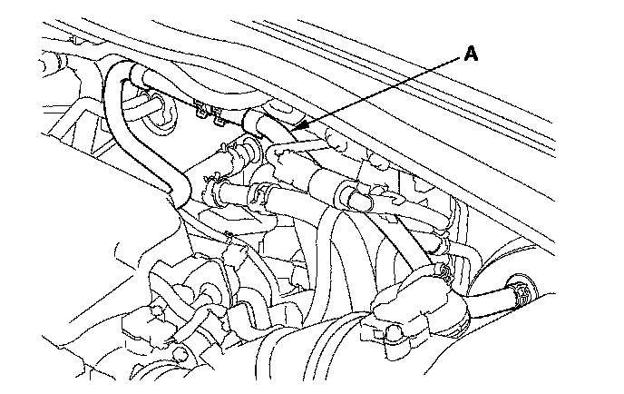

Vacuum Brake Booster: Testing and Inspection
Brake Booster TestFunctional Test
1. With the engine off, press the brake pedal several times to deplete the vacuum reservoir, then press the brake pedal hard, and hold it for 15 seconds. If the brake pedal sinks, either the master cylinder is bypassing internally, or the brake system is leaking. Inspect the brake hoses and lines.
2. Start the engine with the brake pedal pressed. If the brake pedal sinks slightly, the vacuum booster is operating normally. If the brake pedal height does not vary, do the brake system test.
Leak Test
1. Press the brake pedal with the engine running, then stop the engine. The brake pedal height should not vary while pressed for 30 seconds. If the pedal height rises, go to step 6. If it does not rise, go to step 2.
2. Start the engine and let it idle for 30 seconds. Turn the ignition switch off, and wait 30 seconds. Press the brake pedal several times using normal pressure. When the pedal is first pressed, it should be low. On consecutive applications, the pedal height should gradually rise. Does the pedal rise on each consecutive application? If it rises, the booster is OK. If it does not, go to step 3.
3. Disconnect the brake booster vacuum hose (A) at the booster. The check valve is built into the hose.

4. Start the engine, and let it idle. There should be vacuum available. If no vacuum is available, the check valve is not working properly. Replace the brake booster vacuum hose and check valve, and retest. If vacuum is found, go to step 5.
5. With the engine off, reconnect the vacuum hose to the brake booster.
6. Start the engine, and then pinch the brake booster vacuum hose between the check valve and the booster.
7. Turn the ignition switch off, and wait 30 seconds. Press the brake pedal several times using normal pressure. When the pedal is first pressed, it should be low. On consecutive applications, the pedal height should gradually rise.
^ If the pedal position does not vary, inspect the seal between the master cylinder and booster. If the seal is OK, replace the brake booster.
^ If the pedal position varies, replace the brake booster vacuum hose/check valve assembly.